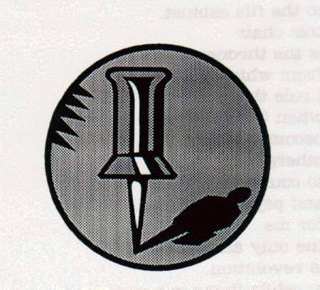

back to Paul's Poetry Page
back to Paul's Poetry Page|
your picture smiles at me from my office wall right next to the menu from the sushi take-out place and slightly above a memo describing the phone system which I've since found out is riddled with errors. long before I got here several dozen push pins formed a smiley face on the bulletin board. I corrected that immediately. Paul David Mena 15 December, 1996 Acton, MA
|
 |
back to Paul's Poetry Page